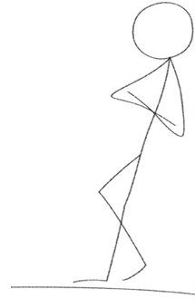

Nadace OKD byla založena dne 25. ledna 2008 dle zákona č. 227/1997 Sb., o nadacích a nadačních fondech, a byla zapsána Krajským soudem v Ostravě do obchodního rejstříku, oddíl N, vložka č. 280. Nadaci bylo přiděleno identifikační číslo 27832813.
Jediným zakladatelem Nadace OKD je společnost OKD, a. s. Nadaci řídí správní rada nadace, jejíž činnost kontroluje dozorčí rada nadace.
Nadace OKD se při poskytování nadačních příspěvků řídí těmito právními normami a dokumenty:
Informace o zpracování osobních údajů v Nadaci OKD:
Pro prohlížení je třeba mít v počítači nainstalovaný Adobe Reader .